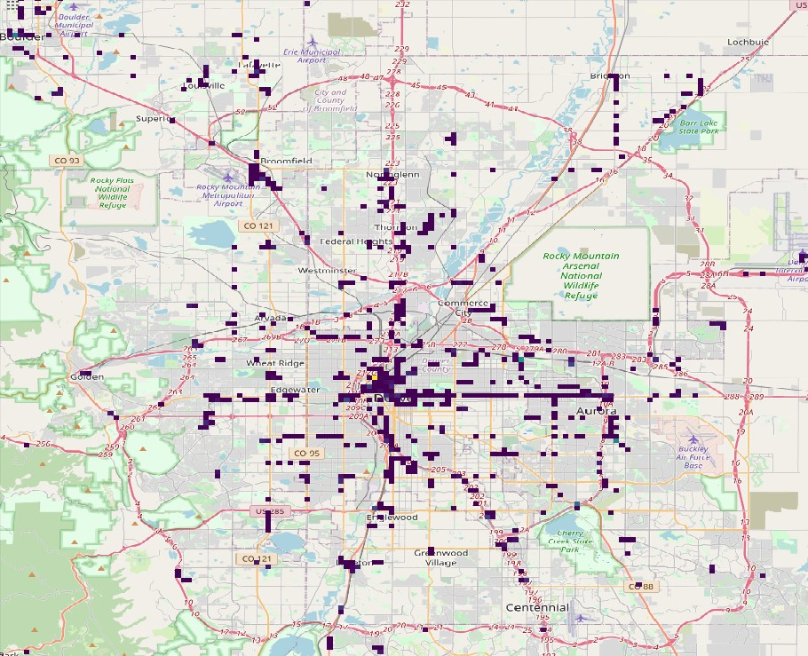

The goal of this project is to use RTD's live position feeds of buses to identify which lines are experiencing bus bunching the most. The ultimate purpose of this project is to better inform RTD of where resources and analysis should be more heavily allocated to avoid the issue of bus bunching. This website will be updated with the full results and analysis when they are completed.
Heatmap of bus bunching on June 11th, 2020 overlaid on OpenStreetMap (OSM) imagery of the Greater Denver Area.